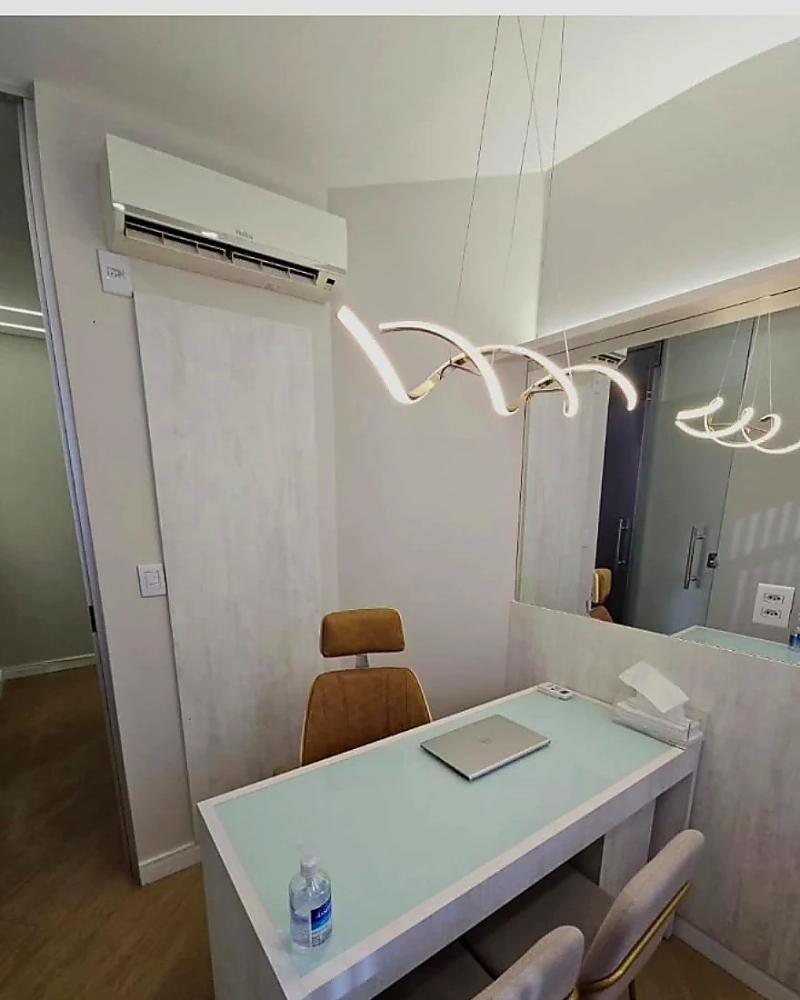
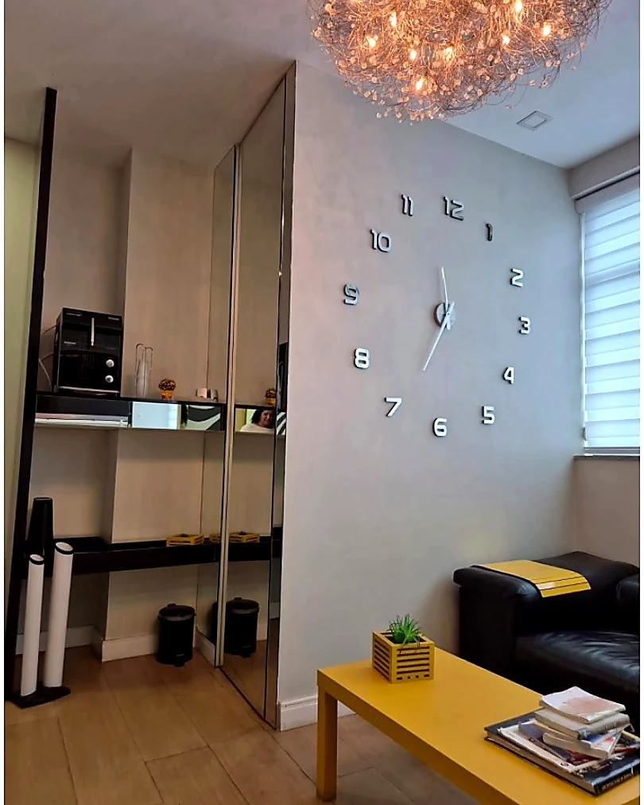
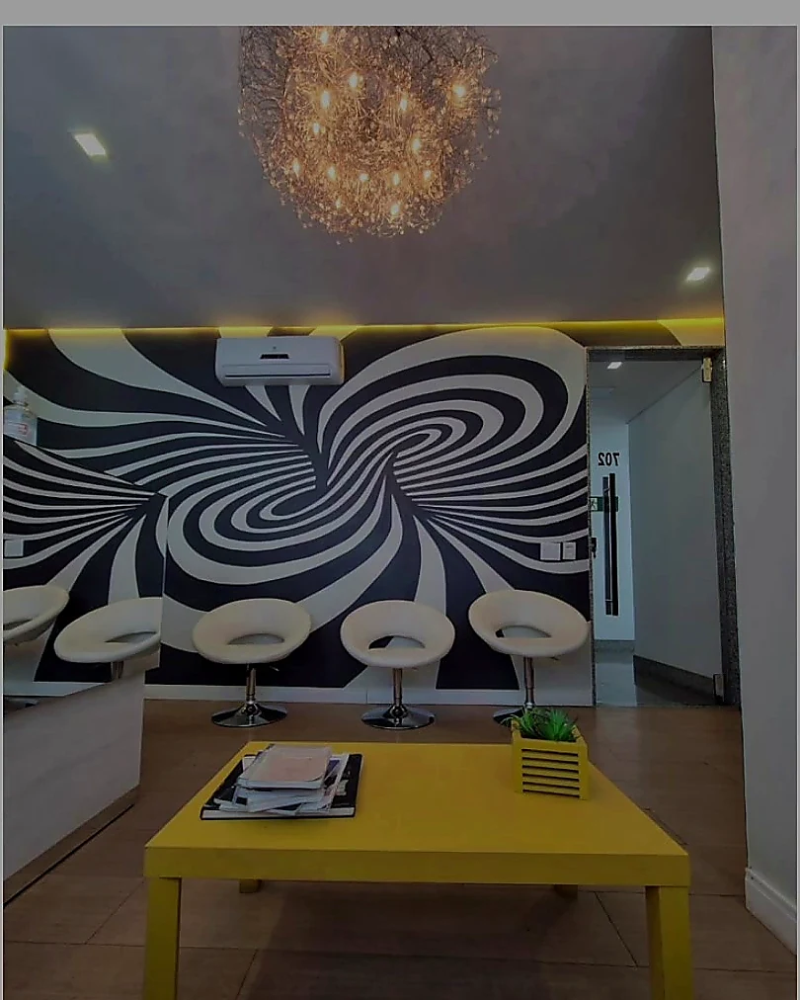

Psiquiatria adulta
Avaliação e acompanhamento individualizado para diferentes demandas de saúde mental.

Sou médico formado pela Universidade Federal de Ouro Preto, com atuação em serviços de Saúde Mental e residência em Psiquiatria pelo Instituto Raul Soares — FHEMIG.
Meu trabalho prioriza uma escuta qualificada e acolhedora, com uma abordagem individualizada para cada paciente, respeitando sua história, seu momento e suas necessidades.
Conduzo cada consulta com ética, cuidado e busca constante por atualização científica.
Atuação em Psiquiatria de adultos, Psicogeriatria e acompanhamento de transtornos ansiosos e depressivos.
Avaliação e acompanhamento individualizado para diferentes demandas de saúde mental.
Cuidado especializado para a saúde mental e a qualidade de vida na maturidade.
Escuta e tratamento para sintomas ansiosos, angústia e impactos na rotina.
Acompanhamento cuidadoso para depressão, oscilações de humor e sofrimento emocional.
O primeiro encontro é uma oportunidade para compreender a história, as queixas e os objetivos do paciente, construindo os próximos passos com clareza.
Um espaço reservado para falar com liberdade sobre o que você está vivendo.
Compreensão cuidadosa dos sintomas, rotina, histórico e necessidades atuais.
Orientações e acompanhamento definidos de forma personalizada e responsável.
Consultas em Belo Horizonte, conforme disponibilidade de agenda.
Atendimento por vídeo para quem busca praticidade e continuidade.
Retornos para acompanhar a evolução e ajustar o cuidado quando necessário.
“Acredito que uma abordagem individualizada começa por ouvir com atenção a história de cada pessoa.”Minha abordagem de cuidado
Sim. Realizo atendimentos presenciais em Belo Horizonte e também consultas por vídeo, conforme a modalidade escolhida.
Você pode entrar em contato comigo pelo WhatsApp do consultório ou utilizar o botão de agendamento para verificar os horários disponíveis.
Atendo adultos e, conforme a modalidade disponível, também crianças.
Atendo pacientes pelos convênios Unimed, Amil, Bradesco Saúde e SulAmérica, conforme as condições do plano contratado.
Preparei um ambiente elegante, reservado e confortável para os atendimentos psiquiátricos presenciais.


